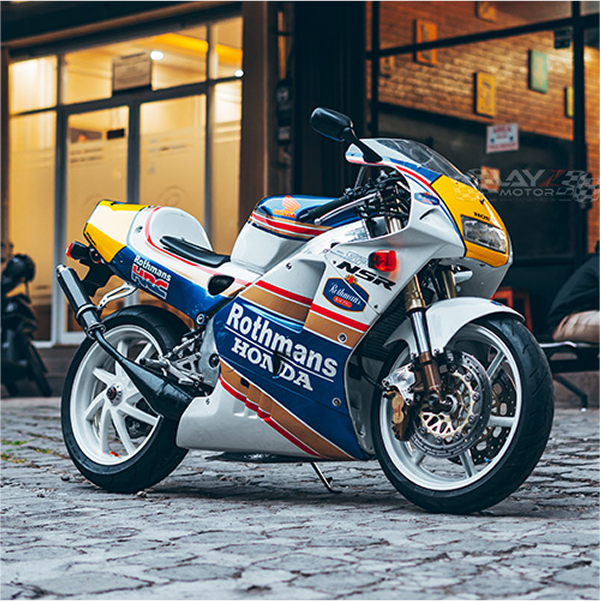

Honda NSR250R – The Ultimate 2-Stroke Racer
The Honda NSR250R was a road-legal version of Honda’s GP race bikes, featuring a powerful V-twin two-stroke engine and advanced suspension for unmatched cornering performance.

The Honda NSR250R was a road-legal version of Honda’s GP race bikes, featuring a powerful V-twin two-stroke engine and advanced suspension for unmatched cornering performance.